Objective
Construct a complete three-bit ADC from discrete analog stages, then demonstrate waveform conversion on the laboratory bench.
PROJECT 02 / ECD
For EEE313, I built a three-bit ADC on a breadboard and displayed its output directly on a VGA monitor. The assignment proposed Arduino for digital control; I used Basys 3 to run the conversion sequence, trigger waveform capture, and draw the sampled signal. The laboratory demonstration showed recognizable sine, square, triangle, and sawtooth traces.

Construct a complete three-bit ADC from discrete analog stages, then demonstrate waveform conversion on the laboratory bench.
I combined a MOSFET sample-and-hold, comparison and regeneration stages, and a selectable reference ladder with VHDL conversion, triggering, capture, and VGA logic.
The breadboard and FPGA operate as one instrument. Four waveform shapes display at 1 kHz, and the 500 Hz and 200 Hz sine tests show capture adapting to longer input periods.
The sample-and-hold keeps one input value available while the FPGA makes three successive comparisons. Each comparator decision selects the next reference and contributes one bit to the result. A complete conversion takes 48 µs.
A threshold trigger finds a repeatable rising crossing. Capture follows two detected periods or stops at 256 samples. One buffer collects the next record while the VGA renderer reads the completed one.
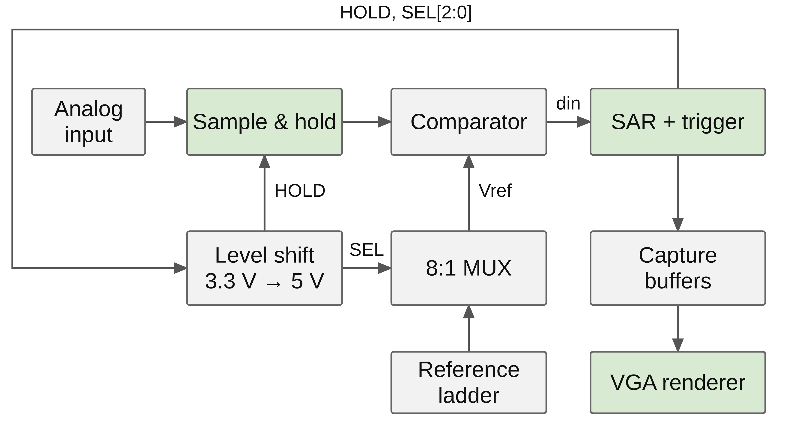
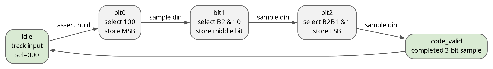
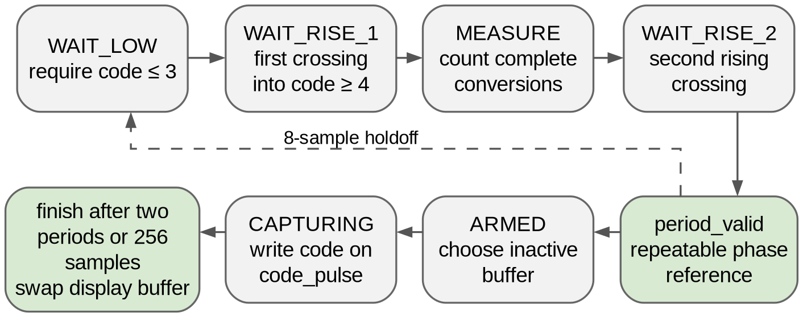
I used LTspice to study sampling, comparator polarity, and reference spacing. On the bench, I checked the held waveform and control activity before testing the complete converter with the signal generator, oscilloscope, and VGA monitor.
| Check | Result described in the report | Design connection |
|---|---|---|
| LTspice sample-and-hold | The held node follows the input during acquisition and maintains a staircase during hold. | One stored voltage supports all three comparisons. |
| Comparator and references | The regenerated decision follows the held input relative to the reference; nominal ladder taps span 2.556–4.500 V. | Comparator polarity and reference ordering support the successive-approximation sequence. |
| Physical sample-and-hold | Oscilloscope views show the held staircase and its relationship to control activity. | The breadboard sampling stage works as part of the conversion path. |
| 1 kHz waveform tests | Sine, square, triangle, and sawtooth inputs produce recognizable VGA traces. | The analog circuit, conversion controller, trigger, and display operate together. |
| 500 Hz and 200 Hz sine | Stable traces contain more samples per period. | Capture length follows the input period within the 256-sample buffer. |
| Reference-network spot check | The meter reads 3.542 V at a midrange point. | A measured operating point lies inside the reference window. |
| 12.950 kHz experiment | A smaller hold capacitor and an adjusted clock divider produce a sparse, distorted trace. | This separate experiment explores settling time, sampling cadence, and input frequency. |
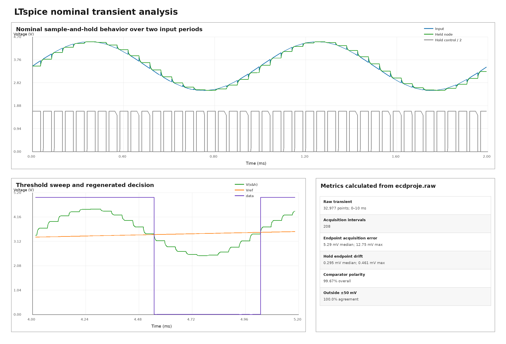
The nominal test uses a 1 kHz, 2 V peak-to-peak waveform centered near 3.5 V. The photographs place the oscilloscope input and VGA output side by side, showing how the same converter responds to four waveform shapes.
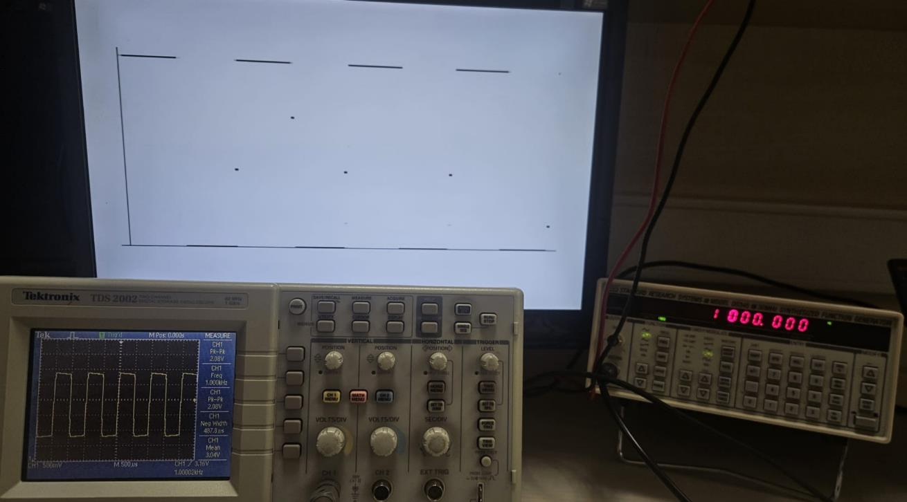
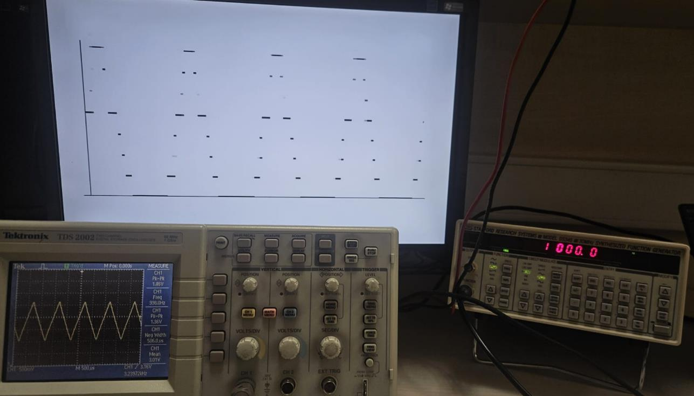
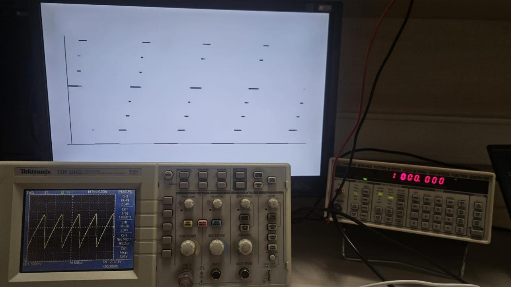
At the nominal 20.833 kSa/s rate, two periods occupy about 83 samples at 500 Hz and 208 samples at 200 Hz. Both fit inside the 256-sample buffer, allowing the same capture logic to follow a longer waveform period.
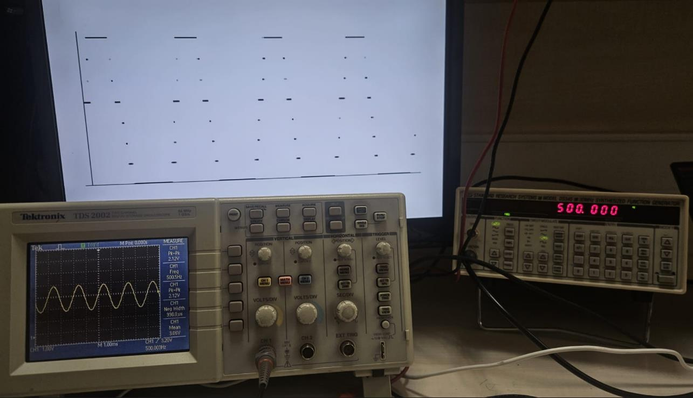
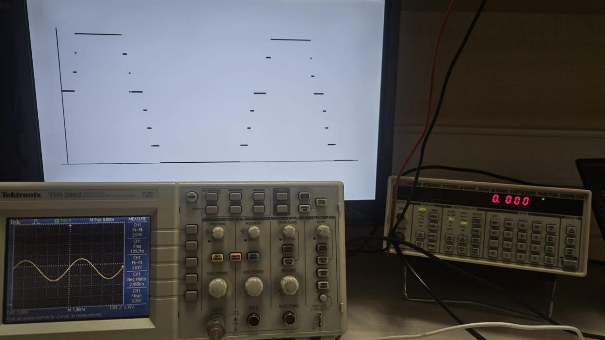
I assembled the analog chain and reference network on solderless breadboards. The PMOD connection carries HOLD, the three reference-select lines, and the comparator decision. This arrangement keeps the held node and reference voltages accessible for probing while Basys 3 controls conversion and drives the monitor.
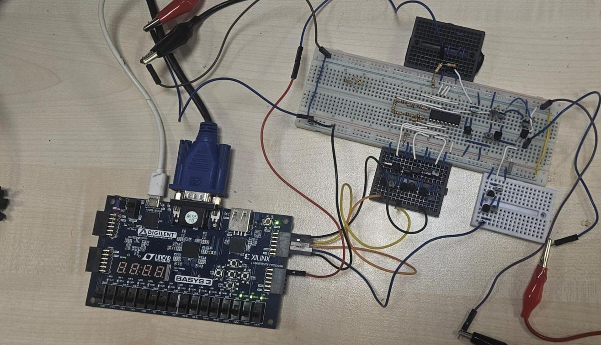
The report’s control interface uses two cascaded inverters to preserve active-high HOLD and the natural-binary selector address while translating the voltage. The comparator return enters the FPGA on K17; its pin voltage must meet the LVCMOS33 input requirements.
VGA-Interfaced 3-Bit ADC on Basys3 explains the design choices, analog circuits, conversion and trigger logic, VGA rendering, and laboratory results. The appendices include the lower-frequency demonstrations, reference and spectral checks, and the additional high-frequency experiment.
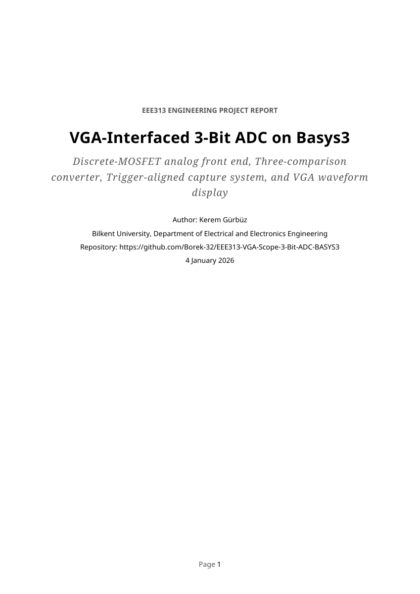
Three bits provide eight amplitude levels. The resulting staircase is expected, and the renderer’s horizontal segments explain the separated edges in the square and sawtooth traces. The laboratory photographs demonstrate waveform conversion; they do not give a calibrated ADC accuracy specification.
The nominal 48 µs conversion period gives about 20.8 samples per cycle at 1 kHz. Below approximately 163 Hz, two complete periods would exceed 256 samples, so capture reaches the memory limit before completing that span.
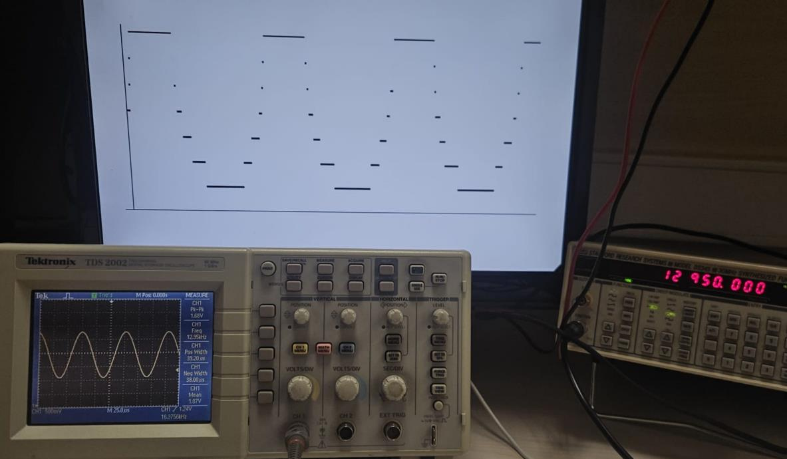
The project brings transistor-level analog design, FPGA sequencing, and a visible waveform display into one working breadboard system. Its main engineering lesson is the need to coordinate switch timing, reference selection, comparator polarity, and capture behavior across the complete signal path.
{kind=link}
{kind=link}
{kind=link}
{kind=link}
{kind=link}
{kind=link}
{kind=link}
{kind=link}
{kind=link}
{kind=link}
{kind=link}